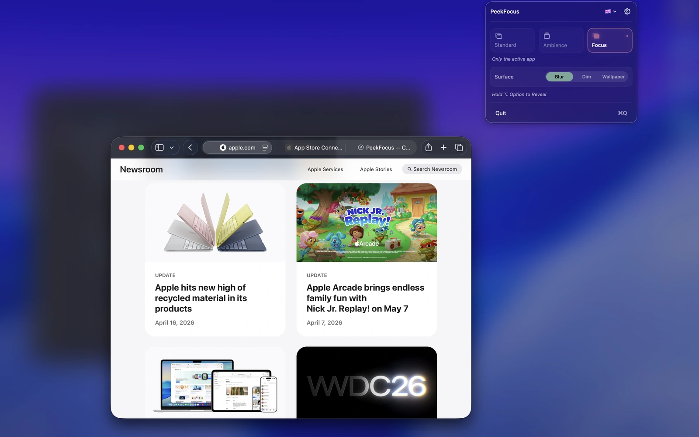
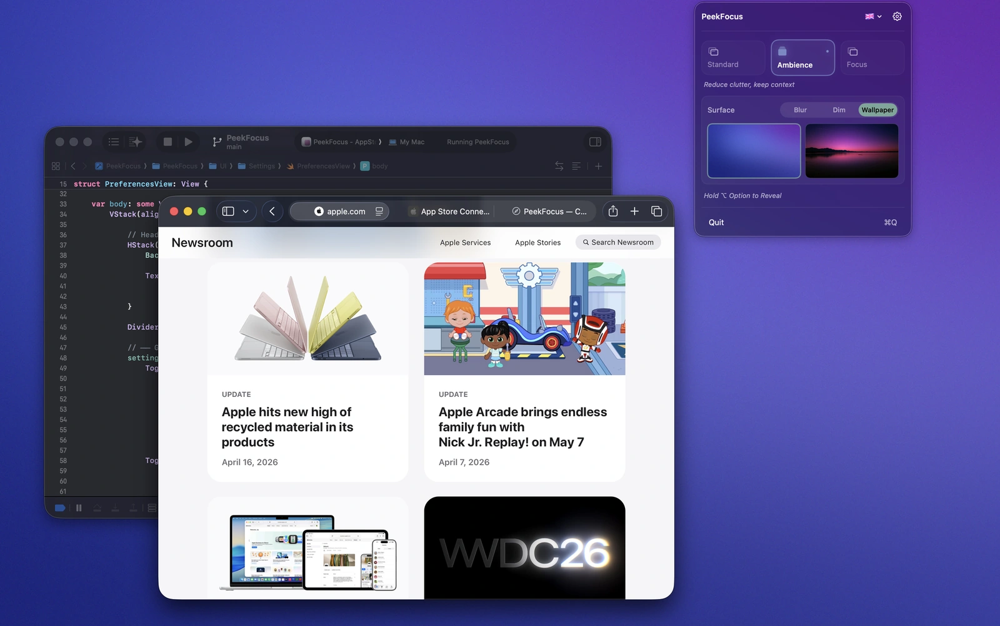
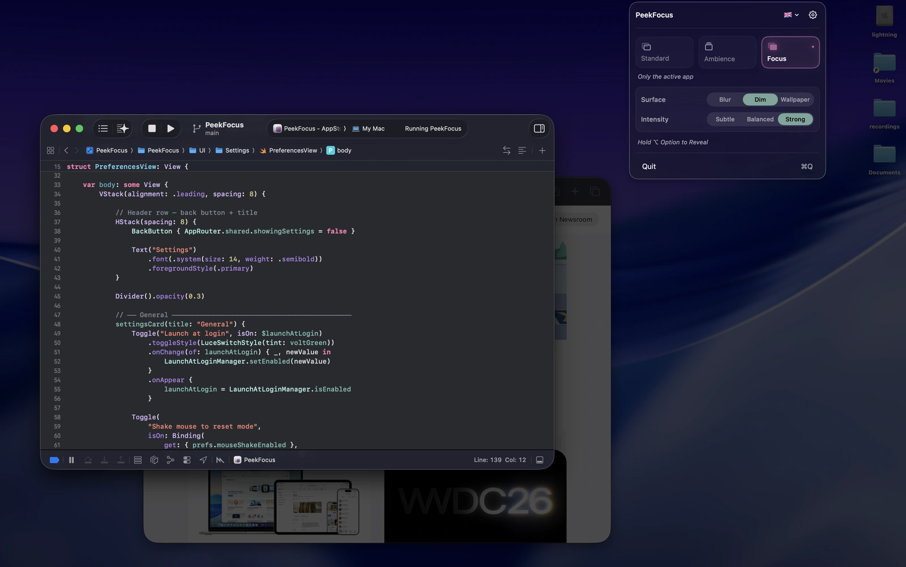
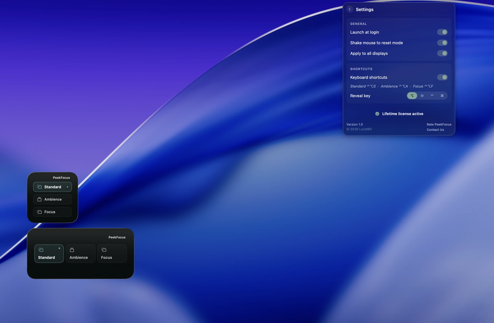

PRESENTATIONS · WORKFLOW
PeekFocus
Make your screen instantly presentable.
Your desktop is cluttered. You need to share your screen. One keystroke — and everything behind your active window fades quietly into the background. Three modes let you choose how much of your workspace stays visible.

Ready to share in one keystroke.
Your active window stays clear while everything else fades quietly into the background. Clean, calm, and instantly presentable.

Calm without hiding your workspace.
Ambience replaces desktop clutter with a softer backdrop while keeping every window exactly where it is. Frosted blur, smooth dim, custom wallpapers, and a subtle live gradient keep your screen feeling calm without losing context.

Beautiful Surfaces.
Frosted blur, smooth dim, or your own custom wallpaper. Each mode has its own independent surface, so Ambience and Focus can create entirely different moods for your workspace.

Always ready. Never in the way.
Lives quietly in your menu bar with quick access to every mode and setting. Configure keyboard shortcuts, customize each display independently, and switch instantly from the menu bar or desktop widget.
Core Features
Three Modes
Standard, Ambience, or Focus. One keystroke switches between them — before a call, during deep work, or any time.
Beautiful Surfaces
Frosted blur, smooth dim, or custom wallpaper. Each mode remembers its own surface independently.
Hold to Reveal
Hold a key to peek at everything behind the overlay. Release and it returns. No toggling, no interruption.
Shake to Toggle
A small mouse shake toggles the overlay on or off. No shortcut needed.
Every Display
Apply to every screen at once or configure each display independently.
Live Gradient
A slow ambient gradient drifts in the background of Ambience mode. Optional — on for movement, off for stillness.
Desktop Widget
Switch modes from a desktop widget without opening the app.
Speaks Your Language
Ships in 35 languages, following your Mac's system language automatically.
Strict Privacy
No analytics. No tracking. Everything is local and stays on your Mac.
One-Time Purchase
$4.99 once. No subscription. Lifetime access including all future updates.
Pricing
One price. Lifetime access.
One-time payment. No subscription. Get lifetime access to PeekFocus on your Mac.
No subscription. No account required.
- 7-day free trial
- One-time payment
- Lifetime updates included
- Every feature unlocked from day one
- Native macOS app (Apple Silicon)
- Fully offline & private
Secure checkout by Lemon Squeezy, powered by Stripe. Prices in USD.
FAQ
What does PeekFocus do?
PeekFocus makes your screen instantly presentable. One keystroke fades everything behind your active window — so your screen looks clean before a call, a presentation, or whenever you need to share. Three modes: Standard leaves your desktop as-is. Ambience replaces desktop clutter with a softer backdrop while keeping all your windows visible. Focus shows only your frontmost app and dims everything else. Each mode has its own independent surface — frosted blur, smooth dim, or custom wallpaper.
Will it block notifications?
No — that's macOS's Focus modes. PeekFocus is purely visual; it works alongside whatever notification settings you already use.
Will it work with multiple displays?
Yes. Each display can be configured independently.
Can I customize the keyboard shortcut?
Yes — fully configurable in Settings, with optional per-mode shortcuts.
Is it Apple Silicon native?
Yes — native arm64 build. Runs on macOS 14 (Sonoma) or later.
Is it a subscription?
No. $4.99 once on the Mac App Store, with a 7-day free trial. One purchase, all future updates.